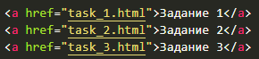

1
Выложи домашку на свой сайт
легков VS Code
По инструкции создай свой сайт на GitHub Pages и добавь на него задания:
- точную копию страницы-загадки (урок 2)
- страницу со стилями (урок 3)
- HTML-структуру своей странички (урок 4)
На главной странице сайта сделай ссылки на все задания — как на картинке.

🖥️ Это большое задание — делай его в VS Code на компьютере и открывай страницу в браузере. Не забудь выложить результат на свой сайт на GitHub!